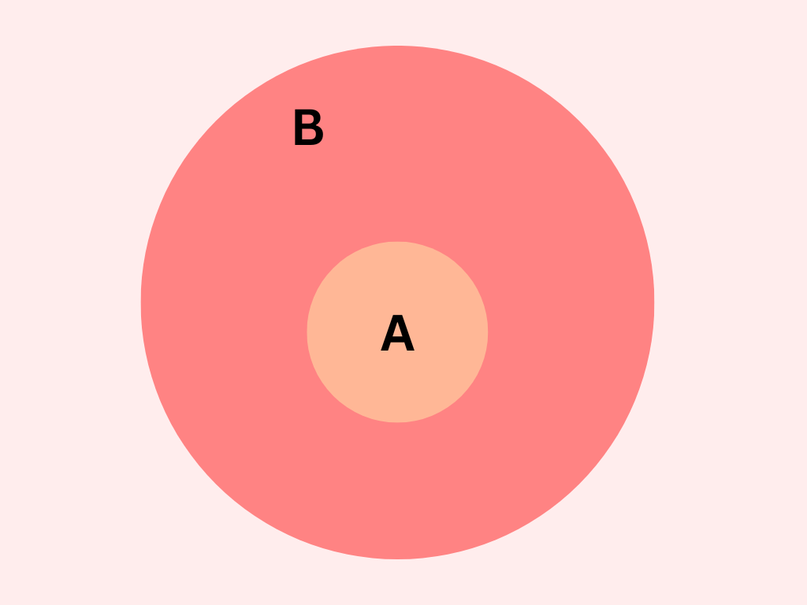
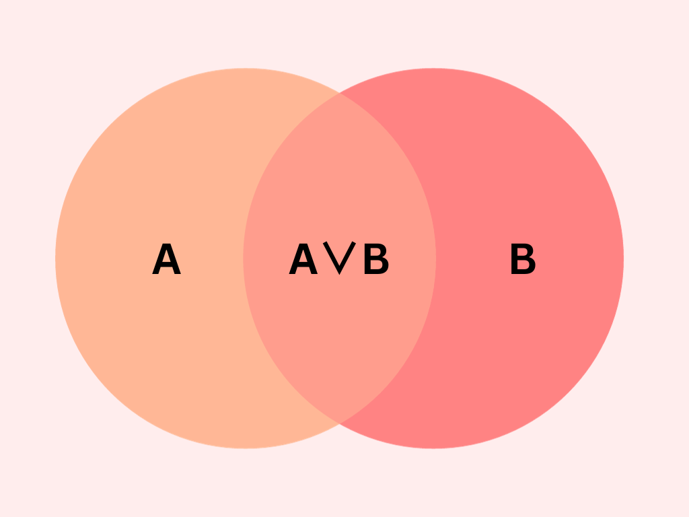
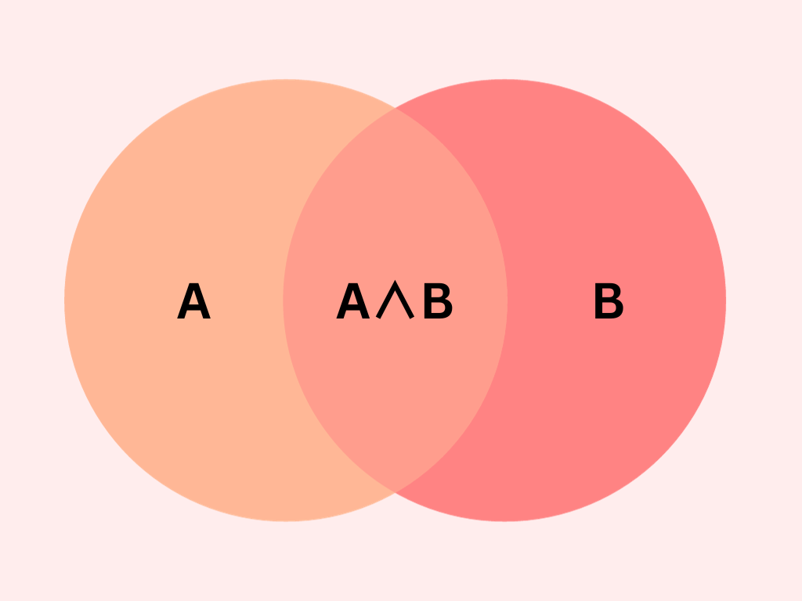
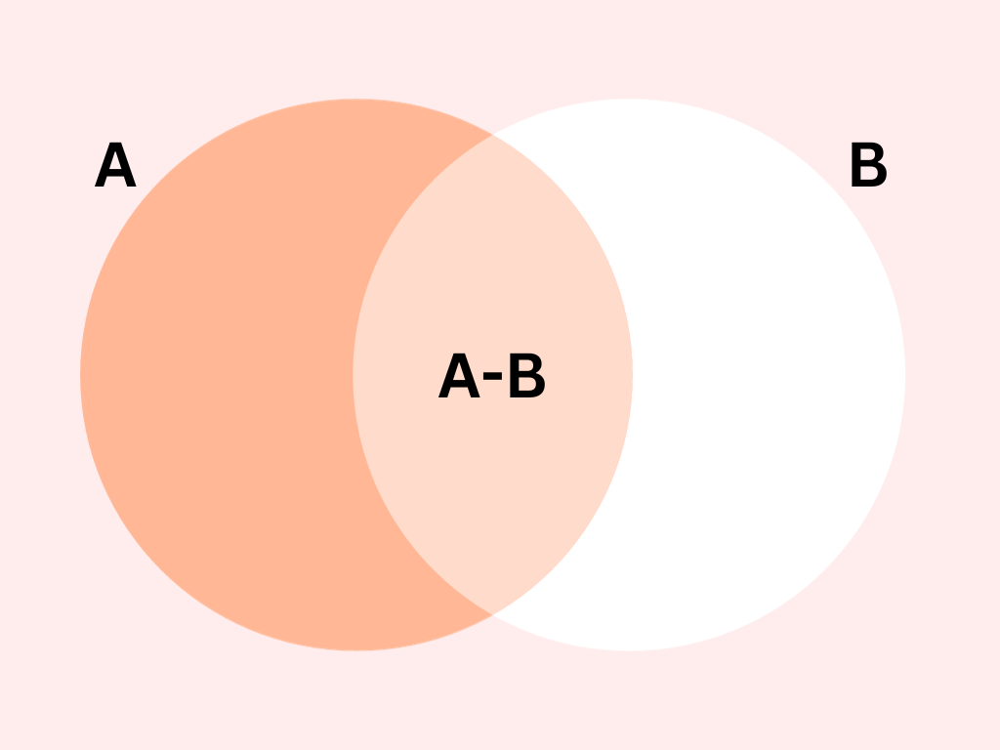

Conjuntos y diagramas de Venn
Creada por: Nereyda Celestina Pérez González.
Fecha: 03 de Noviembre del 2023.
Definición
Es una lista, colección o clase de objetos bien definidos, objetos que pueden ser: números, personas, letras, etc. Estos objetos se llaman elementos o miembros del conjunto.
Representación de conjuntos
Los diagramas de Venn son una representación de los elementos dentro de los conjuntos situados dentro de una línea cerrada.

Tipos de conjuntos
Existen dos tipos principales de conjuntos:
- Finitos
Por ejemplo, P= {x/x es un río de la Tierra}
- Infinitos
Por ejemplo, N= {2, 4, 6, 8…}
También existen otros muy importantes, que son:
- Conjunto universal
- Conjunto vacío
Símbolo: ∅
Por ejemplo: A=Personas vivientes con más de 200 años. B= {x/x^2=4, x es impar}
Y por otro lado, tenemos algunos conceptos que van dentro de este subtema, los cuales son:
- Igualdad de conjuntos
Por ejemplo: El conjunto A es igual al conjunto B si ambos tienen los mismos elementos. A=B
- Subconjuntos

Ejemplos: D= {5,4,3,2,1} conjunto C= {1,3,5} subconjunto
- Complemento de un conjunto

Por ejemplo: Si A es un subconjunto de S, entonces A’ es el complemento de A en S, el conjunto de todos los elementos de S que no están en A.
Simbología
| Símbolo | Significado |
|---|---|
| / | Tal que |
| ∈ | Pertenece |
| ∉ | No pertenece |
| ∧ | Y |
| ∨ | O |
| = | Igual que |
| ≠ | Distinto que |
| < | Menor que |
| > | Mayor que |
| ⊂ | Contenido |
Operaciones Básicas
- Unión

- Intersección

- Diferencia

- Diferencia simétrica

Ejemplos
- Unión

- Intersección
Si tienes dos conjuntos A = {1, 2, 3, 4} y B = {3, 4, 5, 6}, la intersección de A y B sería: A ∩ B = {3, 4}

Si tienes dos conjuntos A = {rojo, verde, azul, amarillo} y B = {azul, amarillo, naranja}, la intersección de A y B sería: A ∩ B = {azul, amarillo}

- Diferencia

- Diferencia simétrica